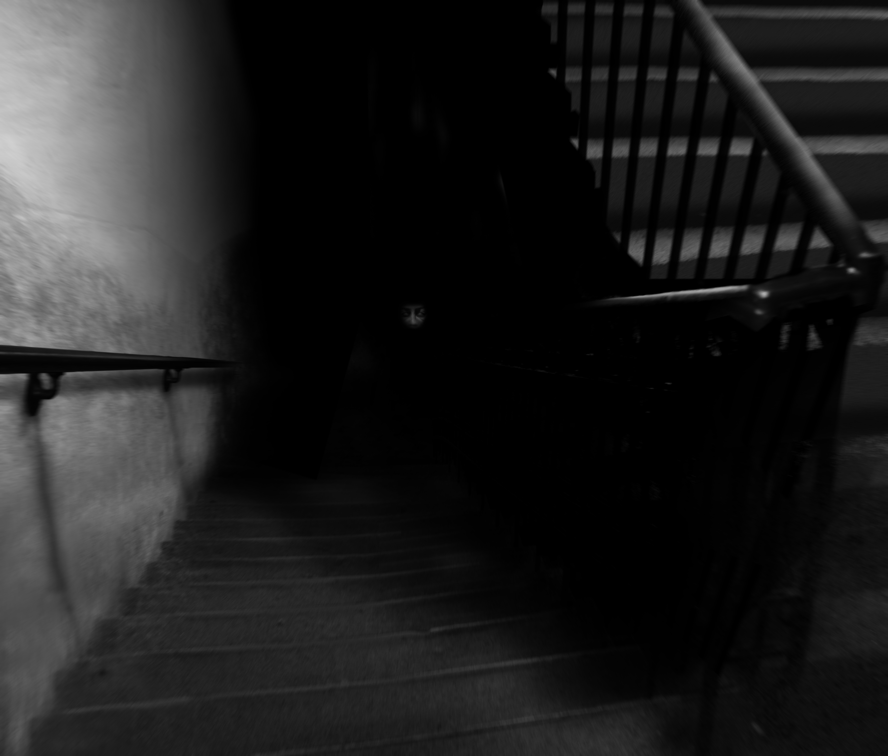

КЛАСС: ЕВКЛИД
SCP-087 - неосвещённая лестница. Пролёты спускаются под углом 38 градусов, в одном пролёте 13 ступенек, между пролётами - полукруглые площадки примерно 3 метра в диаметре. Направление спуска меняется на 180 градусов на каждом пролёте. Конструктивные свойства SCP-087 таковы, что прямая видимость составляет примерно полтора пролёта. Для спуска необходим источник освещения, так как на SCP-087 нет ни ламп, ни патронов для них, ни окон. Светильники ярче 75 ватт оказались неэффективны; судя по всему, SCP-087 поглощает излишний свет.
Подопытные утверждают (их показания подтверждаются аудиозаписями), что слышат тревожные возгласы, предположительно издаваемые ребёнком от █ до ██ лет. Источник звука находится примерно в 200 метрах под первым пролётом. Тем не менее, попытки спуститься вниз не приблизили подопытных к источнику звука. Глубина лестницы, вычисленная по Исследованию 4, самому длительному из проведённых, гораздо больше теоретически возможной глубины как самого здания, так и геологических формаций вокруг. На данный момент неизвестно, кончается ли SCP-087 где-либо.
SCP был четырежды исследован сотрудниками класса D с применением видеозаписи. Все подопытные столкнулись с SCP-087-1, выглядящим как лицо без зрачков, ноздрей и рта. Природа SCP-087-1 неясна, но было установлено, что голос и плач издаёт не он. Встретившись с SCP-087-1, подопытные испытывали очень сильную паранойю и страх, но непонятно, естественные ли это реакции, или аномальные.